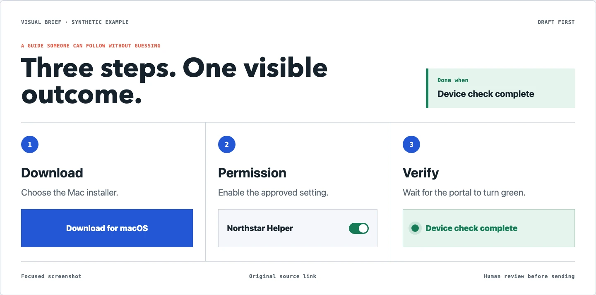
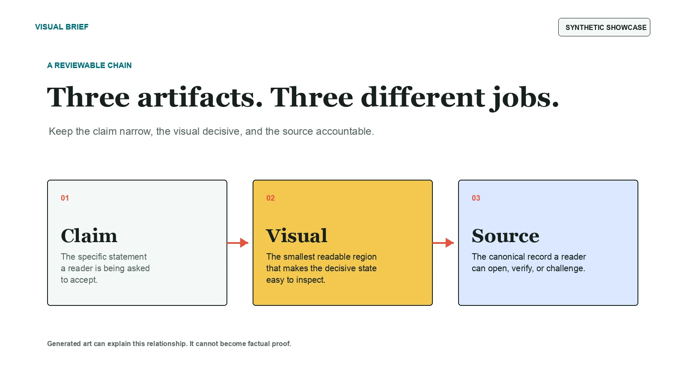
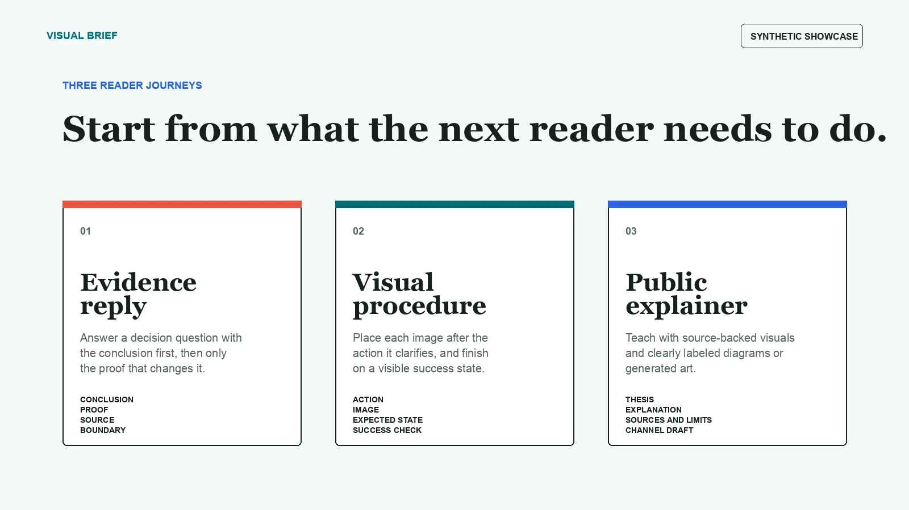
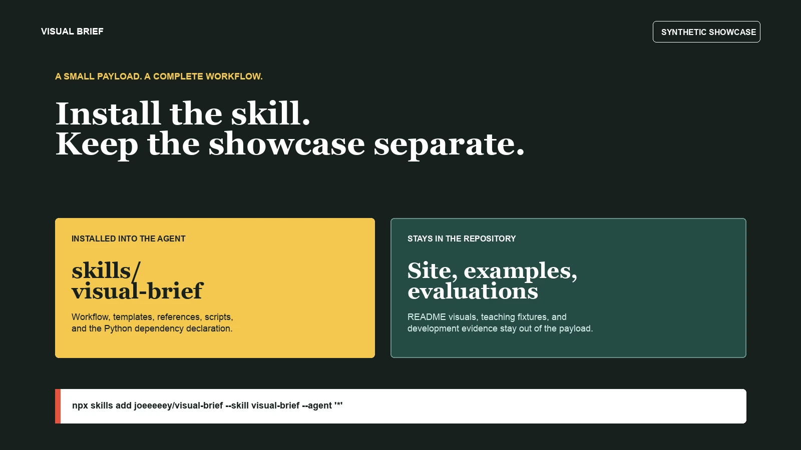

01
Evidence reply
Answer a stakeholder question with the conclusion first, then only the evidence that changes the decision.

Visual communication skill for AI agents
Show the important step. Do not make the reader hunt for it.
After an AI researches a question or walks a web flow, it captures the exact button, sentence, or success state and prepares a reader-ready draft.
Visual Brief handles that last mile. It keeps only the useful part of a page, places it directly after the matching instruction, and ends a procedure on a visible success state.
One small, concrete use case
Instead of sending a wall of text, the AI shows the download button, the permission to enable, and the green state that means the setup is actually finished.
Every screen in this case study is synthetic. No real company, account, employee, or device data is used.
Open the case study
A reviewable chain

01
Answer a stakeholder question with the conclusion first, then only the evidence that changes the decision.
02
Put each image directly after the action it removes ambiguity from, then finish on a visible success state.
03
Teach an idea with source-backed screenshots and clearly labeled illustrative diagrams or generated art.
Draft first
Visual Brief creates local deliverables, WebP assets, previews, Block Kit JSON, Notion-ready Markdown, and channel drafts. Uploading, sending, posting, form submission, or public repository creation remains an explicit approval step.
The installable skill is separate from this showcase site, its images, synthetic examples, and public evaluation materials.
Open the repository
npx skills add joeeeeey/visual-brief --skill visual-brief --agent '*' --yes